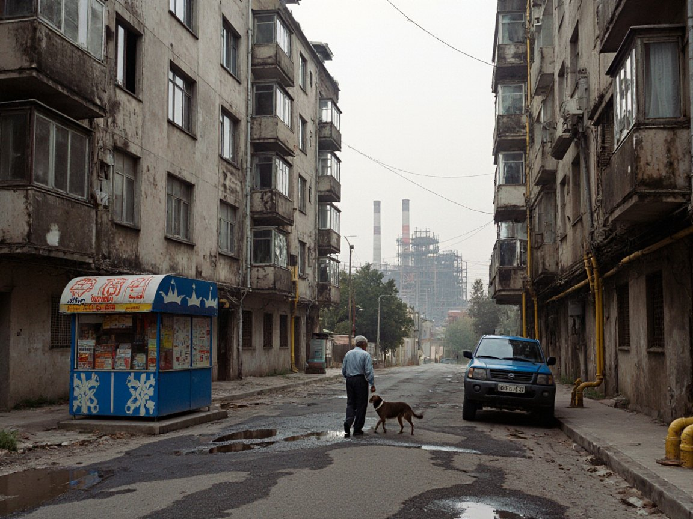

Отопление идёт: старые магистрали встречают первые холода
Отопительный сезон в Нуржане начался, и городские теплосети вступают в первые по-настоящему холодные недели. Большинство труб помнят советскую эпоху панельных домов.

Отопление включено в Нуржане и в Таласе. Как сообщал IradOne в воскресенье, городские системы теплоснабжения подходят к первым холодным неделям, когда любая слабость старых сетей проявляется быстро.
Теплосети Нуржана принадлежат городской администрации, эксплуатирует их предприятие «Нуржантеплосеть». Нуржанская ТЭЦ рядом с НПЗ принадлежит «НурГазу»: её перевод на газ запланирован, но пока не обеспечен финансированием.
Большая часть магистралей в городе построена в советское время вместе с панельными кварталами в Дастгохе, Навбахоре и микрорайонах. Поэтому в первые недели сезона обычно случаются утечки, неравномерно греют батареи на верхних этажах, растёт число звонков от жильцов.
Сегодня в Нуржане ясно, днём 14 градусов, ночью 2. Воздух, по данным Гидромета, нездоровый для чувствительных групп: индекс качества воздуха 138. В сезон отопления это привычная картина, в ясные безветренные вечера дым стоит над городом.
Для семей важна и цена тепла. Зимний счёт за отопление двухкомнатной квартиры обычно составляет от 250 до 400 сомов в месяц, платёж выставляется в сомах.
Если батареи в вашем доме остаются холодными дольше нескольких дней, сначала обратитесь в управляющую организацию дома, а при отсутствии ответа — в городскую администрацию. Укажите адрес, этаж и время, когда отопление не работало.